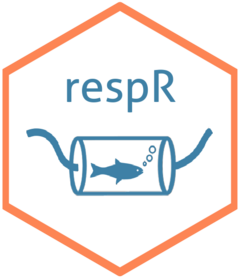

 respR : Processing and analysis of respirometry data
respR is a package for R that provides a structural, reproducible workflow for the processing and analysis of respirometry data. While the focus of the package is on aquatic respirometry, respR is largely unitless and so can process, explore, and determine rates from any respirometry data, and indeed linear relationships in any time-series data.
Use respR to:
- Inspect respirometry data for common issues before analysis
- Explore and visualise oxygen timeseries
- Calculate rates manually or automatically using multiple regression analysis
- Adjust rates for background oxygen consumption or production
- Convert rates to any common unit of oxygen consumption or production
- Select rates according to various criteria
- Export results quickly for reporting
- Identify critical oxygen values, such as
A highlight of the package is the auto_rate() function. This uses machine learning (kernel density estimation) to automatically identify linear regions of data, that is regions where oxygen uptake or production rates are stable and consistent. This allows metabolic rates to be extracted in an objective manner. See vignette("auto_rate") for more details.
Installation
respR is now available on CRAN, and can be installed via the ‘Packages’ tab in RStudio or by running this command:
install.packages("respR")You can also install the latest version direct from Github:
devtools::install_github("januarharianto/respR")Getting started
Visit the respR website to get started. The site has a range of vignettes detailing the functionality, plus example workflows, documentation, and more.
We are also happy to help directly. If you have problems using the package or getting started with your analysis, get in touch with a sample of your data and we will help get you started.
Publication

The package has also been peer reviewed and published in Methods in Ecology and Evolution. Please cite this publication if you use respR in your published work.
respR has been used to examine metabolic rates and photosynthesis in corals, plankton, micro- and macro-algae, fish, crustaceans, echinoderms, cephalopods, bivalves and more, in both lab and field studies. Check the respR Citations page to see a list of published studies which have used the package.
Contact, feedback and help
See here for more ways of providing feedback and getting in touch if you are having issues.
Support package development
If you would like to help support the package development or just buy us a beer to say thanks see here
Developers
- Nicholas Carey, Marine Scotland Science
- Januar Harianto, University of Sydney
Usage
For a quick evaluation of the package, try out the following code:
library(respR) # load the package
# 1. Check data for errors, selecting cols 1 and 15:
urch <- inspect(urchins.rd, time = 1, oxygen = 15)
# 2. Automatically determine most linear regions:
rate <- auto_rate(urch)
# 3. Convert
out <- convert_rate(rate,
oxy.unit = "mg/L",
time.unit = "min",
output.unit = "mg/h/kg",
volume = 0.6,
mass = 0.4)
print(out)
## Alternatively, use pipes:
urchins.rd %>% # using the urchins dataset,
select(1, 15) %>% # select columns 1 and 15
inspect() %>% # inspect the data, then
auto_rate() %>% # automatically determine most linear segment
print() %>% # a quick preview
convert_rate("mg/L", "min", "mg/h/kg", 0.6, 0.4) # convert to units